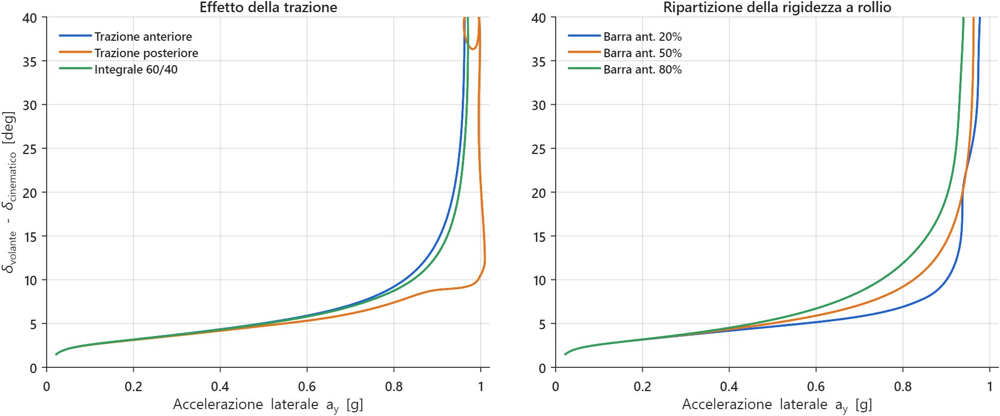
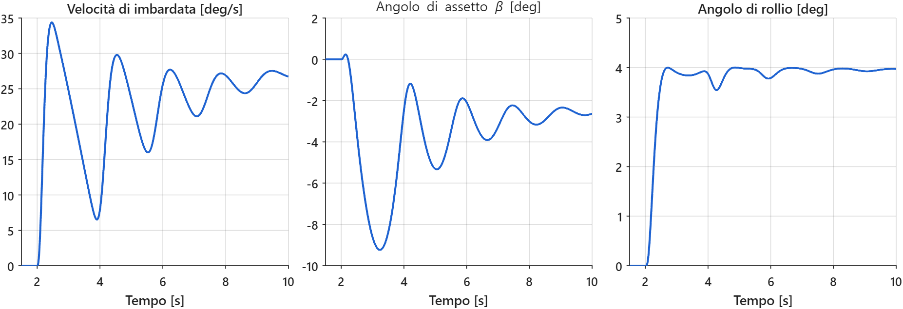
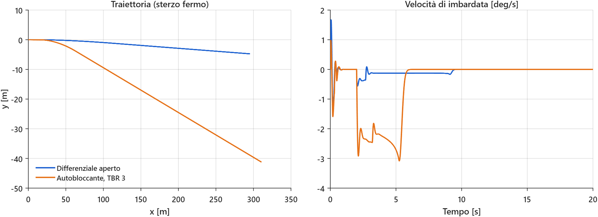
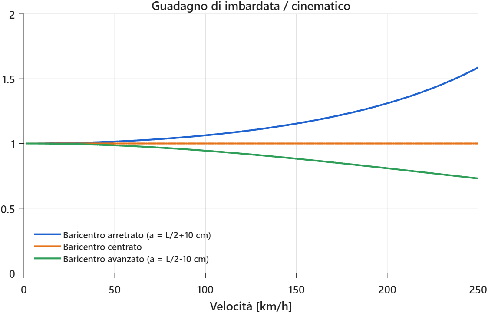
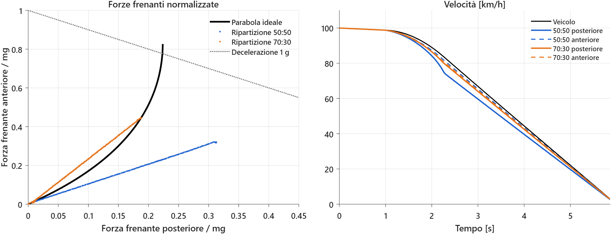

Veicolo completo: curva, rollio e differenziale
Il modello più completo descrive l'auto con imbardata, deriva e rollio della cassa, quattro ruote con pneumatico di Pacejka e trasferimenti di carico, motore con cambio, differenziale autobloccante, impianto frenante e sterzo. Il pilota comanda volante, acceleratore, freno e marcia, e il modello si può provare su manovre standard: sterzata a gradino, a rampa, sweep, steering pad e partenza su fondo a aderenza diversa tra i due lati.
Ho usato il modello per confrontare configurazioni diverse; i grafici di questa pagina vengono dalle simulazioni.

Sottosterzo: trazione e barre antirollio
Con una sterzata a rampa a 100 km/h si ricava la caratteristica di sottosterzo: quanto angolo volante serve, oltre a quello puramente geometrico, per ogni livello di accelerazione laterale. Nella zona lineare le curve coincidono; verso il limite la trazione posteriore sottosterza meno e arriva a circa 1 g, mentre anteriore e integrale saturano prima l'assale davanti. Spostare rigidezza a rollio sulla barra anteriore carica di più le ruote anteriori esterne e aumenta il sottosterzo.

Risposta a una sterzata a gradino
A 100 km/h con una sterzata a gradino la velocità di imbardata ha un picco del 25% sopra il valore di regime e alcune oscillazioni prima di assestarsi. L'angolo di assetto segue lo stesso andamento, mentre il rollio si porta rapidamente a circa 4°, ben smorzato dalle sospensioni.

Differenziale su fondo a aderenza diversa
Partendo in seconda a 30 km/h con le ruote destre su un fondo scivoloso (μ = 0,3) e il volante fermo, si accelera a fondo. Con il differenziale aperto la coppia è limitata dalla ruota che slitta e l'auto procede quasi dritta. Con un autobloccante la coppia passa alla ruota che ha aderenza: si accelera meglio, ma la differenza di spinta tra i due lati fa imbardare l'auto, che senza correzioni del pilota devia di circa 40 m su 300.

Modello a bicicletta
Il modello lineare a due gradi di libertà, deriva e imbardata, è la base per capire la stabilità in curva. Le rigidezze di deriva degli assali si ricavano dal carico statico su ogni ruota, interpolando la curva dello pneumatico. Ho scritto il modello in spazio di stato e calcolato guadagni stazionari, poli, frequenze e smorzamenti al variare della velocità.
Spostare il baricentro di 10 cm cambia il comportamento: avanzato, il veicolo diventa sottosterzante e il guadagno di imbardata cala con la velocità; arretrato, diventa sovrasterzante, il guadagno cresce e il veicolo diventerebbe instabile oltre una velocità critica, qui circa 410 km/h.

Pneumatico: modello di Pacejka
Lo pneumatico 225/50 R17 è descritto con la Magic Formula di Pacejka '96. Nel modello Simulink si impongono scorrimento, angolo di deriva, carico verticale e aderenza, e si ottengono forza longitudinale, laterale e momento di autoallineamento. Le curve mostrano il picco di forza intorno al 10% di scorrimento e a 7° di deriva, il calo di aderenza relativa al crescere del carico e, in combinata, come frenare o accelerare riduce la forza laterale disponibile.

Frenata e ripartizione elettronica (EBD)
Il modello di dinamica longitudinale simula una frenata da 100 km/h con tre strategie: ripartizione fissa della coppia tra gli assali, correttore di frenata con valvola limitatrice e EBD, un controllore PID che regola la coppia posteriore per mantenere lo scorrimento delle ruote dietro poco sotto quello delle anteriori. L'obiettivo è stare vicino alla parabola di frenatura ideale e non bloccare mai per prime le ruote posteriori, che renderebbero l'auto instabile.
Il confronto tra due ripartizioni fisse mostra perché serve una regolazione. In frenata il carico si trasferisce sull'anteriore: con una ripartizione 50:50 l'assale posteriore riceve troppa coppia, i punti si allontanano dalla parabola e le ruote dietro arrivano all'11% di scorrimento, vicine al bloccaggio. Con 70:30 la frenata segue la parabola, ma solo per quella decelerazione e quel carico: correttore ed EBD servono ad adattare la ripartizione alle condizioni reali.

Comfort: modello a quattro gradi di libertà
Per il comfort di marcia il veicolo è un modello piano con scuotimento e beccheggio della cassa e lo spostamento verticale delle due ruote. Dall'analisi modale escono due modi di cassa intorno a 1,2–1,3 Hz e due modi di ruota tra 12 e 14 Hz. Variando lo smorzamento degli ammortizzatori dall'1% al 150% del valore nominale si vede che i modi di ruota sono quelli più sensibili, mentre le frequenze di cassa cambiano poco. Il modello calcola poi le risposte in frequenza e la risposta a un profilo stradale casuale descritto dalla sua densità spettrale.


Prima di questo modello ho costruito in Simulink i modelli di quarto di veicolo a uno e due gradi di libertà, da cui si parte per capire l'effetto di molla, ammortizzatore e pneumatico.
Cosa ho imparato
Queste esercitazioni mi hanno dato un metodo per studiare un veicolo partendo dal modello più semplice che risponde alla domanda, e aggiungendo complessità solo quando serve: il modello a bicicletta per la stabilità, il veicolo completo per il comportamento al limite, il modello a quattro gradi di libertà per il comfort. Ho imparato soprattutto a leggere i risultati con la fisica in mente, per capire perché una scelta di progetto cambia il comportamento dell'auto.